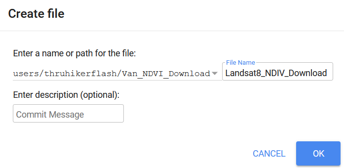
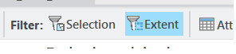

Data Types, Classification, & Visualization
Please note: The Lab Questions corresponds to this lab assignment. There are questions you need to answer in the quiz that pertain to the lab, so its a good idea to skim the quiz questions before starting the lab.
This page contains instructions for the lab assignment, follow them to work through the lab in ArcGIS Pro. There are links to documentation where applicable along with embedded screenshots and videos in the instructions at some steps for reference. Feel free to work with peers in your lab section and don’t hesitate to ask your TA for help!
Warning: The ArcGIS Pro software package is updated frequently. The exact name/position of tools may diverge slightly from what you see in the screenshots or videos. Don’t worry recreating what you see in the videos exactly - just use them as a guide to help you work through things.
Overview
This lab will help you understand different types of data, how we classify data, and techniques for visualizing data. We will use census data from statistics Canada to investigate rural/urban disparities in BC. There are distinct social, political, and economic differences between Urban and Rural communities in BC. Today we are going to investigate if there is a difference in the cost of food in Rural and Urban areas of different sizes. Specifically, portion of their income people spend on food. We are going to define Rural and Urban based on two criteria: total population and population density.
Research Question
What is the relationship between neighborhood green vegetation coverage and housing cost in Vancouver?
Workflow
How we will answer the research question:
Estimate vegetation coverage with satellite data and overlay census data.
Plot the relationship between vegetation coverage and housing cost and run linear regression analysis.
Visualize the results.
Getting Started
Google Earth Engine Sign Up
We are going to use Google Earth Engine (GEE) to download some satelite data. This will require a Google account so that you can access GEE and Google Drive.
- Go to google.com and create an account following the Sign In button if you don’t already have one.
- A google account will give you access to google drive with 15 GB free storage space! This could be a useful resource when working on your final projects!
- Then got to earthengine and sign up
- Choose sign up in the top right.
- Follow the instructions to sign up using your Google account.
- Once you have gone through the sign up process, you can close GEE. We’ll go back to it later.
Note If you are unable to create an account, contact your TA for a link to the data set.
Set Up Your GeoDatabase
- Create a new project in ArcPro called Van_NDVI.
- You can reference the Module 1 for a refresher on setting up a project.
- By default, ArcPro creates a GeoDatabase with every new project. You will see one called Van_NDVI.gdb in your project folder. Refer back to Module 1 for information about GeoDatabases and their corresponding components.
We’re going to work with some Canadian Census Data. You already learned how to download census data in Module 3 so I’ve gone ahead and downloaded the relevant data to save a bit of time. Download and extract the Van_Census.zip file to your newly created project Van_NDVI folder.
Create a new Feature Dataset named CensusData
Set the Coordinate System to NAD 1983 UTM Zone 10N
- NAD 1983 is the name of the datum (North American Datum 1983), UTM Zone 10N is the name of the projection (Universal Transverse Mercator, Zone 10 N)
- You can set this coordinate system to your favorites by right clicking and selecting add to favorites. This will make it easier to find in the future!
- After you click Run, it will appear in your Van_NDVI.gdb. Now we’re going to add some census data.
- Right click on your newly created CensusData feature dataset >> Import Feature Class(es)
- Add the two census data layers you downloaded: Van_DA_2016.shp and VanCMS_CT_2016.shp
Monitoring Vegetation with Satellites
We’re going to work with LANDSAT8 data in this lab. LANDSAT8 is one of a large number of satellites that orbit the earth continuously collecting multi-spectral (visible light & other wavelengths) imagery. We can use multi-spectral imagery for a number of different applications like estimating vegetation health.
Calculating NDVI
The lines on the chart below are referred to as a spectral reflectance curves. They show reflectance (amount of light) on the y-axis, defined as the percent of radiation reflected by different earth features, and wavelength on the x-axis. As you can see, the spectral reflectance curves for different features look very different. Specifically, you can see that healthy green vegetation has very high reflectance in the near-infrared wavelengths (0.7-1.4 µm) and lower reflectance in the visible part of the spectrum (0-0.7 µm), while water absorbs almost all incoming infrared radiation and thus has very low infrared reflectance. Soil has relatively higher reflectance in the visible wavelengths, and intermediate reflectance in the near infrared.

These differences are the basis for the normalized difference vegetation index (NDVI), one of the most commonly used spectral indices for vegetation monitoring. NDVI is calculated as:
\[ NDVI = \frac{(NIR-Red)}{(NIR+Red)} \]
where NIR is reflectance in the near-infrared wavelengths, and RED is reflectance in the red wavelengths. This index can range from -1 to 1, with higher values indicating more/greener/healthier vegetation. Look at the graph above and make sure you understand why green vegetation would have a high value of NDVI.
The gray shaded areas indicate regions of the electromagnetic spectrum that are measured by a satellite. These regions are referred to as “spectral bands.” When you work with satellite imagery, you will have one raster for each band. The values for each raster contain the reflectance measured by the satellite in that band. (This will make more sense in a minute, when you start working with the satellite data).
Using Google Earth Engine
- Go to the GEE code Explorer, log in if you need to, and create a new Repository called Van_NDVI_Download.

- Now create an New File, make sure its located within the Van_NDVI_Download repository you just created, and name it Landsat8_NDIV_Download.

- Copy the following Javascript code from in the grey box below and paste it into the code pane (top middle).
// Coordinates for Vancouver
var Cent = ee.Geometry.Point([-123,49.25]);
// Center Map on Vancouver
Map.centerObject(Cent, 10);
// Import the Landsat 8 TOA image collection.
// Filter out images with cloud covdf > 10%
var Collection = ee.ImageCollection('LANDSAT/LC08/C01/T1_TOA').filter(ee.Filter.lt('CLOUD_COVER_LAND', 10));
// Get the number of images.
var count = Collection.size();
print('Count: ', count);
// Define NDVI Function
var addNDVI_Landsat = function(image) {
var ndvi = image.normalizedDifference(['B5', 'B4']).rename('NDVI');
return image.addBands(ndvi);
};
// Apply Function to all Images
var withNDVI_Landsat = Collection.map(addNDVI_Landsat);
// Make a "greenest" pixel composite.
var greenest = withNDVI_Landsat.qualityMosaic('NDVI');
var ndvi = greenest.select('NDVI')
// Define Color Scheme for Visualization
var ndviParams = {min: -.5, max: 1, palette: ['blue', 'white', 'green']};
// Display the result.
Map.addLayer(ndvi, ndviParams, 'Greenest pixel composite');
// // Export to Google drive
// Export.image.toDrive({
// image: ndvi,
// description: 'Van_Greenest',
// scale: 30,
// region: Boundary
// });3 Click Run and see take note of what happens. Reference the video below if you have trouble.
- Google quickly processes your request and adds the image to your screen. You can change the transparency or turn the image on/off with the check box.
- This image is a “Greenest Pixel” - the code queries all LANDSAT8 data, calculates NDVI for every location in the map view, and then selects the maximum NDVI value at each location, which represents the peak greenness (across all seasons/years) and adds it to the image!
- Zoom and pan a bit to explore!
Downloading the Data
Follow these steps to download the NDVI data. You can reference the video below for help. Note the export dialog has changed slightly since the video was recorded (see screenshot below video). In order to download data for a specific area, we first need to create and upload a boundary file.
- In the ArcGIS Pro Geoprocessing pane, find the Dissolve tool and set VanCMA_CT_2016 as the input
- Note: by default, the output will be saved to your Van_NDVI.gdb as a feature class.
Howver, feature classes can not be read by Google Earth Engine.
Instead: save the output as a Shapefile (.shp) one level up in your Van_NDVI project folder and name it Boundary. Shapefiles are just a different way of storing vector data.
- Remove this layer from your table of contents. We don’t need it in this map project.
- Upload the Boundary file you just created to google earth engine.
- Go to the Assets tab (top left)
- Click New > Shape files
- Navigate to your Van_NDVI folder and upload the Boundary file you created.
- Try to upload all the files named Boundary. GEE will tell you which (eg. .sbx) file types it won’t accept. Exclude them and upload the rest
- Click refresh to see your upload
- It may take a few minutes to show up, the video has been edited for brevity
- Import the Boundary file into the code.
- Click on the boundary file you uploaded, and select import.
- It will import in the top of the code window.
- By default it names it “table”, change the name to Boundary.
- Run the download.
- Scroll to the bottom of the code.
- In Javascript the double backslash “//” will “comment out” code or text so that it is ignored by the processor.
- Highlight the commented out section of code and hit “ctrl + /” to get rid of the double back slashes.
- Alternatively, you can just manual delete the double back slashes.
- Click Run
- Switch to the Task pane in the top right. Run the Van_Greenest task to export this layer to your Google Drive.
- Google Drive is a free (15GB) file storage service that comes with a Google account.
- Go to your Google Drive and find the Van_Greenest.tif, it should be located in the root folder.
- It could take 5/10 minutes for GEE to process your request. Right click on it to download it an put it in your Van_NDVI folder.

Project the Raster Layer
By default, data from GEE is not projected! It comes in the WGS 1984 Geographic Coordinate System (Lat/Lon referencing the WGS 1984 Datum). We need to get it into NAD 1983 UTM Zone 10N so it matches the rest of our data! Feature Datasets only work for Vector data. The NDVI data is in the Raster data format. So we have to reproject it manually. Raster data requires a slightly different tool to do the re-projection than the vector data we worked with in Modules 1-3. The steps and video below goes shows you how to do that.
In the Geoprocessing pane, search for the Project Raster tool.
Set the projection to UTM Zone 10N (find in your favorites for quick access).
After running, the Van_Greenest_ProjectRaster should show up on your map.
Now would be a good time to save your project!
Inspecting the Data
Vector Layers & Plotting Relationships
These Census data are in Vector format. A key advantage of Vector Data is that we can have multiple attributes associated with each entity (point/line/polygon). Here, we are interested in three variables: Population (total residents), Housing (monthly rent), and Income (annual total).
- Symbolize your census data by population.
- Set the Field to Population
- Change the symbology for Van_DA_2016 to Graduated Colors
- Explore how the different classification schemes influence the way the classified layer looks on the map
- Make a Histogram of Population.
- Set the number to population
- Make sure the mean, median, and standard deviations are all shown on the Histogram.
- Create a chart income vs. housing.
- Right click Van_DA_2016 and click Create Chart > Scatter Plot.
- In the chart properties tab set:
- X-axis: Income
- Y-axis: Housing
- Make sure “Show linear trend” is checked to display a regression line on your chart.
- Note the zero values on the X & Y Axes. Stats Canada “suppresses” data when they don’t get enough responses to a census question. No house in Vancouver is worth $0. We need to exclude the zeros so they don’t skew our results.
- In the Map tab, click Select by Attribute, select for “Housing” greater than 0 And “Income” greater than 0.
- Select by Attribute allows us to select rows/objects with a certain attribute.
- It relies on something called a Structured Query Language (SQL).
- We are selecting all rows “Where” our conditions are met.
- You can use the And/Or commands to combine querries.
- And: Selects whre All statements are true
- Or: Selects whre Any statements are true
A Note on Linear Regression
A regression line is also know as a “line of best fit”. Linear regression assumes a linear relationship between some an independent variable (e.g. Income) and a dependent variable (eg. Housing). This is the simplest form of regression is know as Simple Linear Regression.
- In this model, the dependent variable Y is influenced by the independent variable X proportional to the slope m. If m = 1 means a 1:1 relationship between X & Y, m = 2 would mean Y increases by 2 units for every 1 unit increase in X, m = 0.5 would mean Y increases by 1/2 unit for every 1 unit increase in X. The intercept b accounts for an offset (bias) in the model.
\[ Y=mX + b \]
- Any deviations from this linear relationship are “errors”. That is, all the other variability that cannot be explained by the model. Housing cost is impacted by many factors (eg. scarcity) that aren’t as easy to capture with census data alone.
- In the example below for Van_DA_2016 (before excluding zeros), M = 0.0123 and b = 660.1, which means at $0 income, rent is $660.1. And for every $100 increase in income, rent goes up $1.23.

The R2 score, is known as the coefficient of determination. It is a measure of how well a model fits the data. It ranges from 0 to 1, with 0 representing “no fit” and 1 representing a “perfect fit”.
- This table shows how we assess the strength of a relationships indicated by the R2 statistics. In the example above, there is no strong relationship.
| R2 | Relationship |
|---|---|
| <0.3 | Very Weak |
| 0.3 - 0.5 | Weak |
| 0.5 - 0.7 | Moderate |
| >0.7 | Strong |
Comparing CTs to DAs
Repeat the steps above for the VanCMA_CT_2016 layer. Don’t forget to exclude the zeros on your scatter plot. Note there are fewer zeros overall. Think about why that might be. Hint look at the population of CTs compared to DAs
Classifying Raster Data
These NDVI data are in Raster format. An important caveat of raster data layers is they can only have one value per cell. However, they are useful because they allow us to represent continuous phenomena (i.e. vegetation health) as a simple image.
Create a Histogram
To get a feel for the distribution of NDVI values in the dataset, we’re going to plot them in a histogram to aid our visual inspection of the NDVI data.
- Create a chart showing the count of cells by NDVI values.
- A histogram represents a distribution by grouping the data into bins (ranges), and plotting the count of values (eg. raster cells) for by bin.
- Change the bin number to see how changing the size of the bins, impacts how you perceive the data. Try 10, then try 50.
Use The Natural Breaks Classification
- Search for the Reclassify tool in the geoprocessing pane. Use the projected NDVI layer as the input.
- Click classify to set the classification scheme. Set the method to Natural Breaks and the number of classes to 3.
- We talked about the Natural Breaks Classification in Module 3.
- It is designed to automatically find an “optimal” fit to a dataset.
- We can use it to group the NDVI values into three classes:
- 1: Water/Urban (lowest values)
- 2: Medium Density Residential (middle values)
- 3: Green Vegetation (highest values)
Change the Base Map
To help inspect the NDVI classification, we can change the base map and look at a satellite image layer.
- On the Map tab click “Basemap” and choose Imagery
- Toggle the NDVI Layer and classified image on and off to see how the NDVI values correspond to green vegetation on the visible imagery base map layer.
Clean Up Your Workspace Selection
From here on out, we are only going to be working with the VanCMA_CT_2016 so you can remove the Van_DA_2016 layer.
Spatial Analysis
A key aspect of GIS is overlaying multiple data layers to generate new information. There are typically multiple solutions to a given problem in GIS. Here, we are going to look at two methods for combining a raster layer and a vector layer:
Zonal Statistics: This method is faster, but can be applied in a more limited number of circumstances.
Raster to Polygon Conversion: This method involves converting between data types and requires more steps, but it is more flexible.
Method 1: Zonal Statistics as Table
We are going to overlay the vector data on the raster data to measure the mean NDVI value for each census tract using the Zonal Statistics as Table tool. Then we will Join the resulting output table to add the NDVI values by CT to the layer. A join is a way to add tables to a layer based on a specific column. You can reference the video below for guidance.
- Find the Zonal Statistics as Table tool in the Geoprocessing pane, choose VanCMA_CT_2016 as the feature zone data, and Van_Greenest_ProjectRaster as the Input value raster.
- Set CTUID as the Zone Field
- Select All statistics types
- Right click on VanCMA_CT_2016 and choose Joins and Relates > Add Join.
- Set CTUID as the Input Join Field
- Choose the Zonal Statistics table as your input. (the name should look something like ZonalST_VanCMA_1)
- Make sure CTUID is selected as the Join Table Field as well
- Inspect the Join
- Open the attribute table and note the new columns at the end
Method 2: Raster to Polygon Conversion
We are going to convert the classified raster layer to a vector layer. Then we can overlay the resulting vector layer with the VanCMA_CT_2016 layer using an intersect which will let us calculate the total green vegetation area per CT in the next step. You can reference the video below for guidance.
- Find the Raster to Polygon tool in the geoprocessing pane.
- Set the Classified NDVI image as the Input raster
- Choose Value as the Field
- Find the Intersect tool in the geoprocessing pane. It will combine the feature classes where they overlap and exclude all other areas. We’ll talk a lot more about this tool.
- Set Van_DA_2016 and the output from the raster to polygon conversion as the inputs. Then click run.
- Change the symbology and open the attribute table to confirm the results look like what we’d expect.
Calculate the Green Vegetation Area and Dissolve by CT
Now we are going to calculate the total green vegetation area by CT, and toss out a bunch of the unnecessary data. You can reference the video below for guidance.
- Add a new field to the VanCMA_CT_2016_Intersect layer called “Green_Veg_Area” so we:
- Name the field Green_Veg_Area
- Make sure the data type is Double.
Choose Select by Attribute and set your query to: Where gridcode is equal to 3.
Right click on Green Veg Area and choose Calculate Field. This allows us to define a function and apply it to the table.
- Set the expression to: Green_Veg_Area = Shape_Area
- Note you only need to complete the right side of the equation
- This will simply copy the shape area for the green vegetation areas, we will work with a more complex expression on the next page.
- We want to assign all other rows a 0. We can quickly invert our selection with the Switch button.
- Calculate the field again, but with Green_Veg_Area = 0
- We have selected gridcode 1 & 2 (Not vegetation) so they all get zeros.
Data Normalization
One last thing step! We need to account for a confounding factor. The CTs are different sizes. To better compare the CTs (which are vastly different sizes), lets Normalize our results by the total area of each CT! Normalizing, sometimes also referred to as standardizing, is the process of dividing one variable by another variable to account for their relationship. It can help us identify patterns that might be masked by a confounding variable.
- Add a new field called “PCT_Green_Space”.
- Make sure you set the data type to Double
- Calculate the field using the following equation:
- PCT_Green_Space = SUM_Green_Veg_Area/Shape_Area
- Note you only need to complete the right side of the equation
- Right click on PCT_Green_Space and select “Statistics”
- This will bring up some descriptive statistics for this field.
Inspect and Compare the Outputs
Lets see how the two methods compare?
Open the Attribute Table of VanCMA_CT_NDVI_Veg. Double click on Mean_NDVI to sort by that column in ascending/descending order. Take note of the CTUIDs for of the CTs with the highest values. Now look at SUM_Green_Veg_Area and PCT_Green_Space. Do they all match up, or are there some differences?
Create a new Scatter plot. Set the X-axis to Mean_NDVI and the Y-axis to SUM_Green_Veg_Area. Look at the R2 score and think about the relationship between these variables. Now change the Y-axis to PCT_Green_Space and not how the relationship changes.
Change X-axis to Mean_NDVI the Y-axis to Housing. Make sure to Exclude the zeros using the same procedure as earlier then look at the resulting relationship. Is the Mean_NDVI a good predictor of housing cost? Create a second scatter plot with Housing on the Y-axis but set the X-axis to PCT_Green_Space. Does it gives a better result? Make sure to filter the second chart
In addition to filtering by a selection, you can also filter a scatterplot by Extent. This will limit the points on the chart to only the polygons visible in the map window. Then try filtering by extent and panning/zooming around your the Metro Vancouver area and take note of how the charts and R2 values update as you move around.

Ordinary Least Squares Regression
Like the name suggests, simple linear regression is … simple. It can only account for the influence of one independent variable at a time. Reality is rarely this straightforward and typically there are numerous factors influencing a dependent variable. A more general version of linear regression is known as Ordinary Least Squares regression. This model allows us to account for multiple dependent variables. For instance, a three factor OLS model (three dependent variables) would look something like this:
\[ Y=aX_1 + bX_2 + cX_3 + d \]
X1, X2, and X3 are all dependent variables and a, b, and c are their respective coefficients (slopes) while d is the intercept.
Imagine a simple example that might be used in the real word: trying and estimate the total damage in dollars (Y) from a storm:
- X1 = maximum wind speed
- X2 = total rainfall
- X3 = population of area effected.
This model won’t give a perfect estimate, but by accounting for two aspects of the storm it will do a much better job describing the storm than just wind speed or rainfall alone. Further, by accounting for population it will give us some idea of number of people impacted. A storm in an uninhabited area wont cause much damage regardless of its strength, but in a large metro area it will cause significant damage.
Think about how this model might be applied to improve our analysis?
Making Your Map
Your task is to create a layout with one map and two charts. The map should show the Housing Cost by Census Tract and the charts should show Housing cost vs. Mean NDVI and Percent Green Space respectively. Add a layout to your map. Choose the 8.5”:” x 11” Letter size, in the Landscape orientation.
Masking Values
Arc gives you a couple options for “excluding” data (e.g. Selecting Where Housing > 0 for a chart) but the built in options are a bit lacking. Its better to be explicit about it. Watch the video below so you can properly represent the missing data values on your map and make sure they are excluded from your charts.
Adding a Chart to the Layout
Arc allows you to add charts to your layout in addition to maps. For this map, add you map on the left and two charts on the right side, one showing Mean NDVI vs. Housing and the other showing PCT_Greenspace vs. Housing. The video below can show you how to do that.
Add Other Map Elements
Add all the appropriate map elements: Title, Legend, Scale Text, North Arrow (optional, Vancouver is familiar), and Source Statement. The video below gives you some pointers for formatting a legend. I’ll leave it to you to decide on the final stylistic choices for you map (color, map element placements, font sizes etc.) You can reference previous Modules for a refresher on how to do the other steps and refer to Module 3 for some stylistic guidelines.
- Note for the Name/Source Statement
- The census data came from Statistics Canada and the MODIS data used to calculate the NDVI values came from NASA. Even though the data were accessed using simply analytics and google earth engine, its best practice to give the original source when you can.